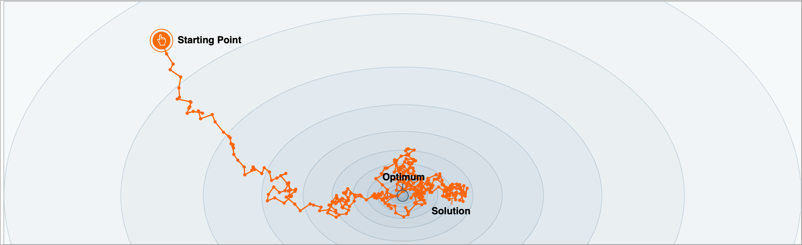
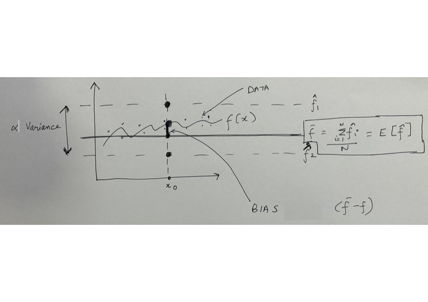

Quiz 3 (27 Feb)
- Total Time: 1 hour 15 mins AND Total Marks: 10
Many evaluation metrics decompose over the training examples. For example, the loss function for linear regression (proportional to mean squared error) is given as: \[L(\theta) = \frac{1}{2N}\sum_{i=1}^N (y_i - \sum_{d=1}^D \theta_d x_i^d)^2\] where \(N\) is the number of training examples, \(x_i\) is the \(i^{th}\) training example and \(y_i\) is the corresponding label. Mention any evaluation metric/loss function in machine learning that does not decompose over the training examples. [1 mark]
We saw the figure showing SGD convergence. 
2A) Prove that SGD is an unbiased estimator. [1 mark]
2B) It seems that the SGD algorithm is not converging to the global minimum. Why do you think this is the case? [1 mark]
2C). Why is it generally a good idea to use a small learning rate for SGD? [1 mark]
2D) It seems that while the SGD algorithm is not converging, but it seems to be very quickly moving close to the global minimum. Why is SGD good initially when the loss is high? To help you answer this question, we pose a series of questions. Consider a simplification of linear regression. Our data is 1d. Our model is \(y=\theta x\). Consider a dataset of \(N\) examples. Obtain the closed form solution for \(\theta\) in terms of the scalars \(x_i\) and \(y_i\) for \(i=1, \cdots, N\). [1 marks]
2E) Consider \(N=3\) and a datset of the form \(x_1=1, x_2=2, x_3=3, y_1=1, y_2=2.2, y_3=2.8\). Plot the approximate contour plot of the loss function \(L(\theta)\) for \(\theta \in [-1, 3]\). [1 marks].
2F) Plot the loss v/s parameters (\(\theta\)) corresponding to the loss for each training input. [1 marks]
2G) Now, answer why SGD works initially, when the loss is high. [1 marks]
- In an above question, we proved that the SGD estimator is an unbiased estimator. We have also previously discussed that we typically have a bias-variance tradeoff in our models. In the recent assignment question, we have plotted the bias and variance for different complexity trees. In this question, you have to derive the mean squared error in terms of three terms: bias, variance and irreducible noise.

Let us assume our data is generated from a `true’ function \(f(x)\) and we have some additional zero mean normally distributed noise \(\epsilon \sim \mathcal{N}(0, \sigma^2)\).
\[y = f(x) + \epsilon\]
We can use some model such as a decision tree or linear regression to approximate \(f(x)\). We now consider a single training example \((x_0, y_0)\). We can define the mean squared error as:
\[MSE = \mathbb{E}[(y_0 - \hat{f}(x_0)^2)]\]
where \(y\) is the true label and \(\hat{f}(x_0)\) is the predicted label. The expectation is over all possible training sets that could have been generated.
To keep the notation simple, we refer \(f(x_0)\) as \(f\) and \(\hat{f}(x_0)\) as \(\hat{f}\). Thus, we can write \[MSE = \mathbb{E}[(f - \hat{f})^2]\] We also define the bias as the difference between the true function and the predicted function, evaluated at the training example: \[bias = \mathbb{E}[\hat{f}] - f\] or, \[bias = \overline{f} - f\] where \(\overline{f}\) is the average/expectation of the predicted function over all possible training sets.
We define the variance as: \[variance = VAR(\hat{f})\] or,
\[variance = \mathbb{E}[(\hat{f} - \overline{f})^2]\]
We define irreducible noise as the variance of the noise term \(\epsilon\):
\[irreducible = VAR(\epsilon)\] or,
\[irreducible = \sigma^2\]
Using the above definitions, show that the mean squared error can be written as:
\[MSE = bias^2 + variance + irreducible\]
[2 marks]